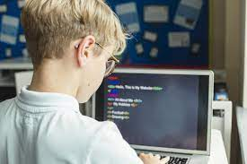
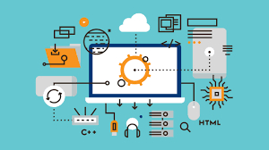

When should you start coding?
Your kids have probably been computer-savvy with video games, smartphones, tablets, and other electronics from a young age. They might also have started to express an interest in learning how to code and program their own games. But, is this a good idea, and should you allow young kids to jump into coding?
Kids as young as 7 years of age can start coding and learning programming basics. In fact, coding for kids has gained popularity rapidly in recent years as technology becomes increasingly part of everyday life. Kids who learn to code when they’re young can set themselves up for a lifetime of opportunities for success.
In this article, we’ll discuss coding in its most basic terms to give you a primer of what it means, what it involves, and how it could be beneficial for your child.
Let’s get started.
What is coding?
Coding is also known as computer programming or developing. Coding utilizes a creative process in which computers are “told” how to execute different actions. This is done through code, or a set of instructions a computer needs so it can function a preferred way.
Stripping coding back to its very fundamentals, it’s simply computer language. It involves a series of inputs and outputs, actions and reactions.
One example of coding can be seen in everyday in your kitchen microwave! When you make your lunch, you enter the cooking time on the keypad and hit the start button. The code which runs the microwave then starts up and uses the cooking time you input to begin working.
The motor within the microwave turns the plate inside. The microwave is only activated once the door is closed, and then the timer counts down on the digital screen. Once the timer hits zero, all the moving parts stop and the microwave beeps or dings to let you know the task is complete.
Most of the time, you only interact with a tiny fraction of what coding can do by using an interface. This could mean the keypad on the microwave, your computer keyboard, or the touchscreen on your smartphone. The capabilities of these codes are all determined by programmers or developers.
Once you start to wrap your head around coding a little bit, you can start asking yourself what changes you might make to a device if you had the know-how to do so.
Maybe you speed up the plate in the microwave (we don’t recommend you try this at home…) or change the pitch of the beep or ding. Look around the room. How do you think the inputs and outputs of the electronics around you actually work? Coding presents countless solutions if you know what you’re doing.
How early can kids learn to code?
As we said in the intro, if your child is 7 years old, then they’re capable of grasping at least beginner’s coding concepts.
Coding for kids involves using high-interest forms of content for creative projects. When kids learn to code, it’s typically done under the guide of a game.
This makes the process fun and engaging while the kids are still learning a new skill.
Why should kids learn how to code?
When talk first started about kids learning coding a few years ago, it was thought of more as hype than anything else. At the time it was a novel idea to the education system and one which wasn’t exactly taken as seriously as it now is.
Over time, the thought went from being “coding is pretty cool, so try it out” to “coding is cool, and you can make a very good living from it!”.
There are a lot of well-paying jobs to be had out there if your kids have the right skillset, with the demand for STEM (Science, Technology, Engineering, and Mathematics) jobs projected to grow over the next decade.
However, it isn’t just a case of how cool the jobs are which makes coding worth learning, either. Let’s take a look at a few other good reasons why kids should learn to code:

1: Coding helps kids understand the connected world better
Most people don’t know much about how our smartphones, tablets, or computers run. We take many of these things for granted on a day-to-day basis.
Having a basic understanding of programming can change the way kids look at everyday technology.
It may also open their eyes to the limitless possibilities coding knowledge offers.
2: Coding can give your kid a competitive advantage
Mastering a skill many of their peers may not have could mean your child is a more desirable candidate for colleges, universities, work experiences, and jobs.
Coding has become a highly sought-after skill in recent years, and one Code.org statistic shows computer science graduates have the potential to earn up to 40 percent more than average.
3: There’s a high demand for computer programmers
Another stat from Code.org shows that 58 percent of jobs in the STEM field are in computing. The problem is only 10 percent of graduates from STEM programs are in computer science.
That’s a 48-percentage shortage in the field. Coding will give your kids a better chance to lock down a lucrative career.
4: It’s satisfying and fun!
Computer programming is a logic-based activity, but it can also be a creative outlet at the same time.
Many programmers live for the challenge of creating something and the reward of seeing the results.
Don’t be scared off by the terminology involved or the thought that coding is too complicated. Given the right instructions, learning to code can be fun and easy.
How do you introduce coding to kids?
If your kids have expressed an interest in learning to code, you’re faced with the daunting task of figuring out where and how to get them started. There are books, apps, websites, YouTube videos, courses, and all sorts of different avenues.

So, which do you choose?
So where do you begin?
Firstly, doing too much too fast could end up causing frustration. You want your child to enjoy coding if they are going to get the most from it.
It’s better to start out slowly, take your time with things, and accomplish small goals along the way.
Here’s a quick breakdown of how to introduce coding to your kids in a way they will enjoy and excel at it:
1: Introduce them to the basics first
It isn’t easy to master something if you can’t quite grasp the basic concepts. The best way to show your kids the fun of coding is with some light reading or viewing.
Find articles, books, or even YouTube videos which cover the basics of coding.
Once the kids understand the general idea of coding, they’ll be able to explain it to friends and relatives in a few short sentences. If you’re unfamiliar with coding, you might even end up learning something, too.
2: Learn a little more
Talking with others about something new is a great way to help it stick in your head. Encourage your kids to chat with their friends about the subject.
For example, they might be able to relate it back to the latest video game they’re playing; your child can explain how the game wouldn’t exist without coding.
At school, they can ask their science teacher about how coding helps power robots.
Your kids may not have anyone in their everyday circle who’s interested in talking about coding. In this situation, you’ll need to branch out a bit. Visit a technology museum or have the kids join an after school club that’s related to coding.
Here, they can better learn about coding and talk about it with other people who are interested in it as well.
3: Try something small
One of the biggest mistakes people make when learning something new is going overboard. Your kids have recently learned how coding is the backbone of movies, robots, and video games. They’re excited and ready for more info, which is great.
However, their first project shouldn’t be designing the next open-world adventure game or battle bot. While anything is possible, keep their expectations realistic in the beginning.
Have your kids start with something small instead.
This way, they can get a feel for coding before they fully dive into it.
Online learning programs such as Scratch are a great way to start, as well as introductory mobile apps like Move the Turtle. We actually taking bookings at the moment on our Scratch Coding summer camp.
Both these resources will pave the way of learning to code while allowing for fun at the same time.
4: Move onto something bigger
Now that your kids have the basics under their belts, it’s time to move onto bigger and better things. Keep in mind they shouldn’t be shooting for the stars quite yet, but they’re ready to take the next step in the journey.
Stick to something that feels familiar to them.
This will help them see how different parts and pieces come together to bring something to life. Perhaps they create a relatively simple mobile app or online game – in fact, this is task is a core part of many of our summer coding camps.
The possibilities are endless.
.png)
Conclusion
We hope you’ve enjoyed this introduction and explainer for what age a child can start coding.
Kids as young as 7 years old are able to do amazing things with code. With apps, summer camps, and online programs, there are many different ways to teach your kids this awesome skill.
Mastering coding can set them up for future success in college and their career. They may even end up creating the next smash-hit game.